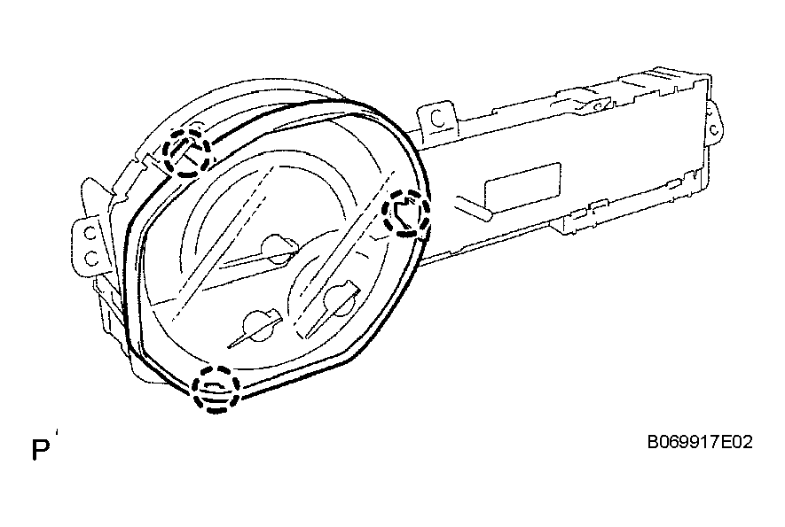

Combination Meter: Reassembly
- INSTALL NO. 1 COMBINATION METER COVER
- Attach the 6 claws to install the combination meter cover.
- INSTALL COMBINATION METER GLASS
- Attach the 3 claws to install the combination meter glass.

Courtesy of © TOYOTA, LICENSE AGREEMENT TMS1002